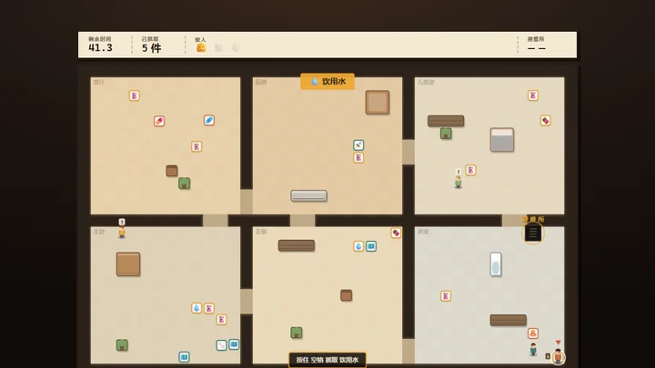
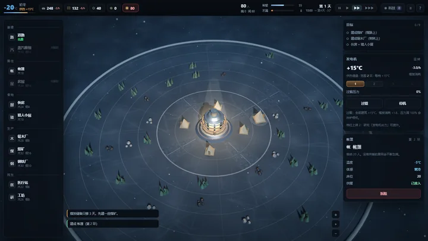
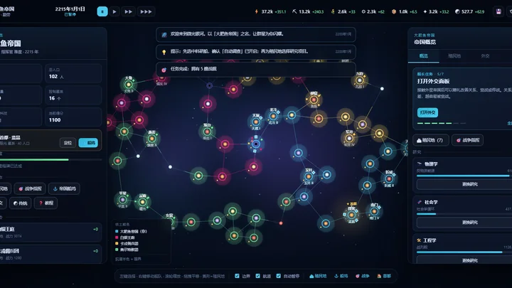

60秒：地堡余生 60s-bunker
60 秒抢救物资，然后在地堡里撑过 15 天。配给、事件牌、外出探险，23 张事件牌。

Frostfall frostfall
环形城市、7 圈 16 扇区、23 天倒计时。供暖半径、发电机过载、24 项科技、希望与不满。
Soul Knight Lite soul-knight-lite
384×216 原生像素地牢，三层随机房间、13 把武器、9 个角色、23 个天赋。贴图全部用代码画。

Stellaris Mini stellaris-mini
64 星 4X：超空间航道、40+ 科技、殖民地分区、外交最后通牒、舰队—星港—登陆完整战争链。